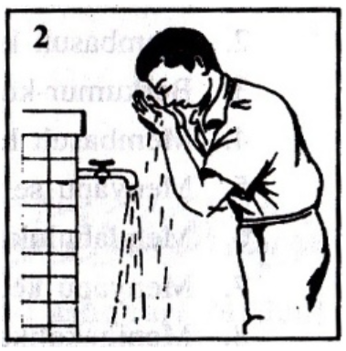

Berikut adalah panduan langkah demi langkah tata cara wudu sesuai Himpunan Putusan Tarjih Muhammadiyah. Wudu adalah syarat sah salat, jadi pastikan Anda melaksanakannya dengan benar.
1. Niat
Niat wudu dilakukan di dalam hati, yaitu dengan sengaja dan sadar untuk menghilangkan hadas kecil demi melaksanakan salat atau ibadah lain yang mensyaratkan wudu.
نَوَيْتُ الْوُضُوْءَ لِرَفْعِ الْحَدَثِ الْأَصْغَرِ فَرْضًا لِلّٰهِ تَعَالَى
Nawaitul wudhuu-a liraf'il hadatsil ashghari fardhal lillaahi ta'ala
Artinya: "Saya niat wudu untuk menghilangkan hadas kecil, fardu karena Allah Ta'ala."
2. Membasuh Telapak Tangan 3x
Membasuh kedua telapak tangan hingga pergelangan tangan sebanyak tiga kali.

3. Berkumur-kumur dan Memasukkan Air ke Hidung (Istinsyaq)
Berkumur-kumur dan memasukkan air ke dalam hidung lalu mengeluarkannya. Dilakukan bersamaan dengan satu cidukan air sebanyak tiga kali.

4. Membasuh Wajah 3x
Membasuh seluruh wajah dari batas tumbuh rambut hingga dagu dan dari telinga ke telinga sebanyak tiga kali.

5. Membasuh Kedua Tangan hingga Siku 3x
Membasuh kedua tangan dimulai dari ujung jari hingga siku, dimulai dari tangan kanan lalu tangan kiri, masing-masing tiga kali.

6. Mengusap Kepala dan Telinga
Mengusap seluruh kepala dari depan ke belakang lalu kembali ke depan, dan langsung mengusap kedua telinga luar dan dalam. Dilakukan satu kali usapan.


7. Membasuh Kedua Kaki hingga Mata Kaki 3x
Membasuh kedua kaki dimulai dari ujung jari hingga mata kaki, dimulai dari kaki kanan lalu kaki kiri, masing-masing tiga kali. Pastikan sela-sela jari kaki juga dibersihkan.

8. Doa Setelah Wudu
Setelah selesai wudu, disunahkan membaca doa:
أَشْهَدُ أَنْ لَا إِلٰهَ إِلَّا اللّٰهُ وَحْدَهُ لَا شَرِيْكَ لَهُ وَ أَشْهَدُ أَنَّ مُحَمَّدًا عَبْدُهُ وَ رَسُوْلُهُ. اَللّٰهُمَّ اجْعَلْنِيْ مِنَ التَّوَّابِيْنَ وَ اجْعَلْنِيْ مِنَ الْمُتَطَهِّرِيْنَ.
Asyhadu An Laa Ilaaha Illallaahu Wahdahu Laa Syariika Lahu wa Asyhadu Anna Muhammadan 'Abduhu wa Rasuuluh. Allaahummaj'alnii Minat Tawwaabiina waj'alnii Minal Mutathahhiriin.
Artinya: "Aku bersaksi bahwa tidak ada Tuhan selain Allah, Yang Maha Esa, tidak ada sekutu bagi-Nya. Dan aku bersaksi bahwa Muhammad adalah hamba dan utusan-Nya. Ya Allah, jadikanlah aku termasuk orang-orang yang bertaubat dan jadikanlah aku termasuk orang-orang yang suci."